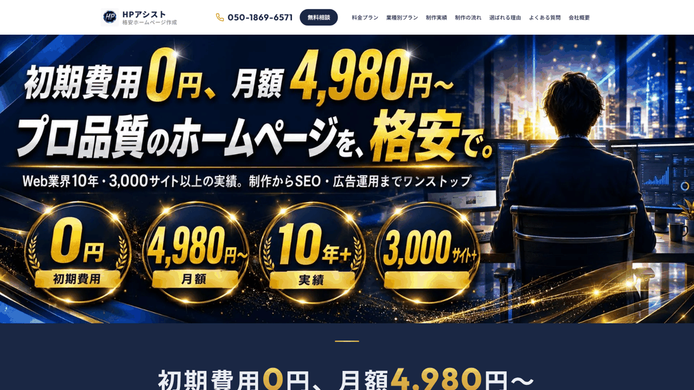
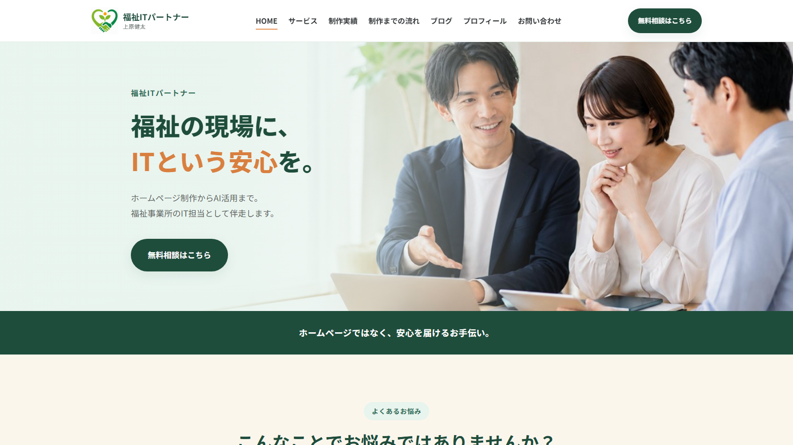
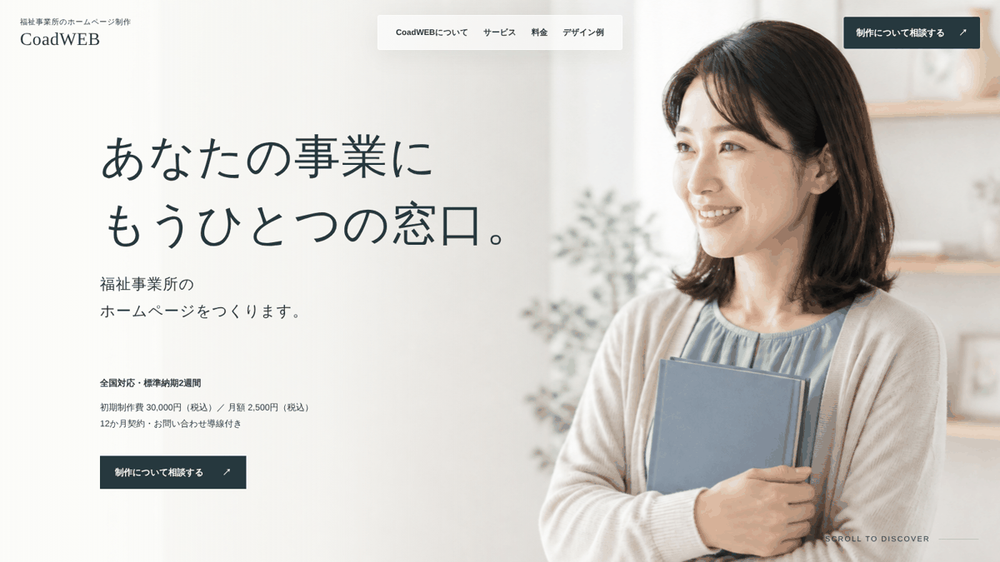
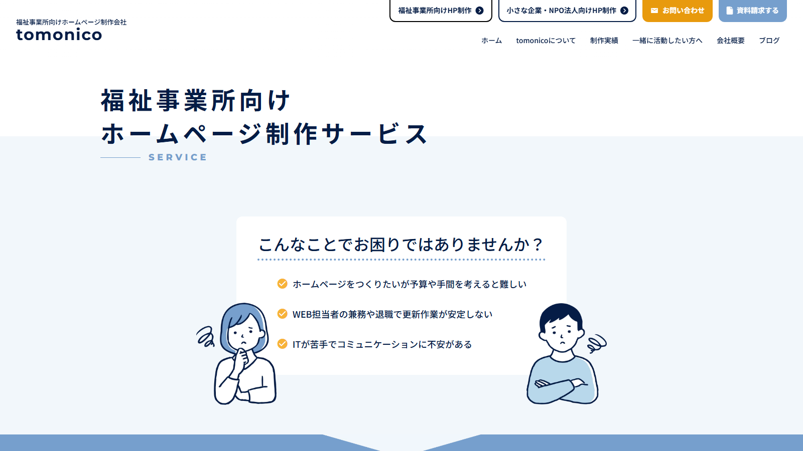
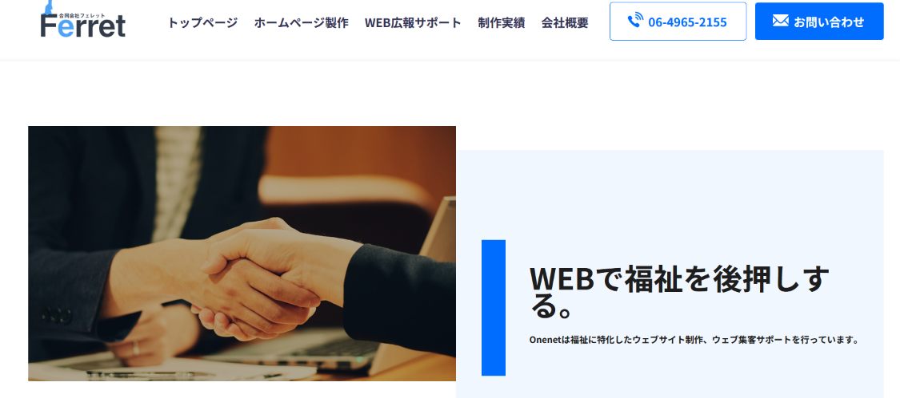

児童発達支援のホームページを探す保護者の多くは、乳幼児健診や保育所・幼稚園で発達について声をかけられ、「療育って何だろう」「うちの子に合うのかな」と迷っている段階にいます。受給者証のことも、費用のことも、まだよくわからないまま検索していることが少なくありません。
そのため児童発達支援のホームページには、事業所の特色だけでなく、初めての方が安心して相談に進めるための説明が欠かせません。あわせて、支援プログラムや自己評価・保護者評価の結果の公表など、制度上の情報を載せる場にもなります。
この記事では、児童発達支援の事業所のホームページ制作に対応している5社（HPアシスト・福祉ITパートナー・CoadWEB・tomonico・Onenet）について、各社の公式サイトで確認できた料金や契約条件を比較します。掲載順は、1年間の費用の安い順を基本にしていますが、運営の関連会社である福祉ITパートナーは、先頭にせず2番目に掲載しています。
目次

5社の違いを一覧で比べられます。1年間にかかる費用の目安（初期費用＋月額×12か月）を中心に載せ、内訳は小さく添えています。金額は税込相当（税別表示の会社は10％を加えた額）です。月額制のサービスは契約期間も大きな違いになるため、あわせて確認しましょう。
← 左右にスライドして比較できます →
| 比較項目 | HPアシスト月額制・修正おまかせ型 | 福祉ITパートナー低価格・短納期型 | CoadWEB福祉特化・低月額型 | tomonico月額保守・更新代行型 | Onenet福祉特化・自社更新型 |
|---|---|---|---|---|---|
| 1年間の費用の目安税込相当・初期費用＋月額×12か月 | 59,760円初期0円＋月額4,980円×12か月（格安プラン） | 19,800円～55,000円ライト19,800円／ブランディング55,000円（月額なし。更新を自社で行う場合。税区分は公式サイトに記載なし） | 60,000円初期30,000円＋月額2,500円×12か月 | 117,480円初期0円＋月額9,790円×12か月（トモニコプラン） | 197,560円初期107,800円＋月額7,480円×12か月（5ページまで） |
| 福祉への理解 | ○福祉専門ではないが、制作実績に児発・放デイの事業所あり | ◎福祉・介護・医療分野に特化。精神保健福祉士が運営。対応事業所に児童発達支援・保育所等訪問支援などを明記 | ◎就労継続支援B型を運営する会社が提供。福祉事業所向けに特化 | ◎障害福祉事業所向けに専門。代表自身が障害当事者。児発の実績は確認できず（放デイの実績あり） | ◎福祉業界出身の技術者。制作事例に児発・放デイあり |
| デザインの自由度 | △テンプレートデザイン。大幅な変更は別途見積もり | ○ブランディングは個別デザイン（ライトは基本デザイン） | ○11種類のデザイン見本から選べる | ◎オリジナルデザインで制作 | ○カスタム可能なテンプレート |
| 相談しやすさ | ○無料相談あり | ◎無料相談あり。福祉の現場経験者が対応 | ○「制作について相談する」窓口あり | ◎無料相談あり。完全オンラインで対応 | ○電話・メール、訪問またはテレビ電話でヒアリング |
| 公開後の更新・サポート | ◎軽微な修正を月3回まで無料で依頼（通常1～2営業日） | ○自分で更新できる。更新代行は別途相談 | △更新・修正の範囲は契約前に相談 | ◎月額内で更新を代行（5営業日以内が目安） | ○自分で編集できる（マニュアルあり） |
| 納期の目安 | ◎最短1週間～ | ◎最短48時間～（通常14日） | ○標準納期は2週間 | △公式サイトに記載なし | △公式サイトに記載なし |
| こんな方に | 更新を依頼したいが、月額は抑えたい事業所 | 短期間・低予算で公開し、更新は自分で行う事業所 | 1年間の総額を抑えて、福祉向けのサービスに頼みたい事業所 | 障害福祉に詳しい相手に、更新まで任せたい事業所 | 福祉出身の担当者に相談し、自分たちで更新したい事業所 |
※◎○△は、各社の公式サイトの記載にもとづく、当サイト編集部の評価です（確認日は下記）。◎＝特に充実していると確認できるもの、○＝対応を確認できるもの、△＝限定的、または記載を確認できないものです。セルの小さな文字が評価の根拠です。評価は他社と同じ基準で行っており、当サイトは福祉ITパートナーの関連会社が運営している点にもご留意ください。
※△は、非対応を意味するものではありません。契約前に各社へご確認ください。
※2026年11月12日に各社の公式サイトで確認した情報です。料金やサービス内容は変更される場合があります。契約前に必ず公式サイトで最新情報をご確認ください。
※HPアシスト・CoadWEBは税込表示、tomonico・Onenetは税別表示に10％を加えた額です。福祉ITパートナーの料金（19,800円・55,000円）は、料金ページに税込・税別の記載がなかったため、表示額のまま載せています。
※福祉ITパートナーは月額契約がなく、公開後の更新を自社で行う前提の金額で、更新代行やサーバー・ドメインの費用は含みません。HPアシストは月額にサーバー代・ドメイン維持費を含むと案内しています。
※「児童発達支援に関する公式サイトの記載」は、各社の公式サイトで確認できた範囲です。記載がないことは、対応できないという意味ではありません。

1年間の費用は、福祉ITパートナーが19,800円～55,000円、HPアシストが59,760円、CoadWEBが60,000円です。HPアシストは18か月、CoadWEBは12か月の契約期間がある点も比べておきましょう。
HPアシストは軽微な修正を月3回まで無料（通常1～2営業日）、tomonicoは月額内で文章や写真の差し替えを依頼できます（5営業日以内が目安）。
2社とも、公開後に自分で文章や写真を更新できると案内しています（Onenetは編集マニュアルあり）。季節の行事やクラスの様子をこまめに発信したい事業所向けです。

HPアシスト（合同会社HPアシスト）

公式サイトを見る ↗東京都三鷹市の制作会社で、業種を問わず月額制のホームページ制作を行っています。福祉専門ではありませんが、公式サイトの制作実績には「児童発達支援・放課後等デイ」のカテゴリーがあり、サービス内容・1日の流れ・対象などを載せた事業所のホームページが掲載されています。
格安プランは、テンプレートデザイン・5ページまで・ブログ機能・独自ドメインとSSL・サーバー代込みで月額4,980円（税込）です。7ページまでの集客SEOプラン（月額9,980円）などもあります。契約期間は18か月の自動更新で、18か月分の月額は89,640円（税込）です。
メリット
- テキスト修正や画像の差し替えなどの軽微な修正を、全プランで月3回まで無料で依頼できる（通常1～2営業日以内）
- 月額にサーバー代・ドメイン維持費が含まれ、別途の契約が不要
- WordPressやプラグインの更新、バックアップにも対応すると案内している
- 制作期間は最短1週間からと短い
注意点
- 契約期間は18か月の自動更新。1年で見直したい場合は合わない
- サイトのデータ・ドメイン・サーバーは同社が管理し、譲渡や解約後のデータの受け渡しは有料
- デザインはテンプレート。デザインの大幅な変更やページ構成の変更は別途見積もり
- 全業種向けのサービスで、福祉や療育の専門知識をうたうものではない
こんな方におすすめ
パソコン作業に時間を割けず、お知らせや写真の差し替えを気軽に依頼したい事業所、サーバーやドメインの管理もまとめて任せたい事業所
福祉ITパートナー

公式サイトを見る ↗福祉・介護・医療分野のホームページ制作と、IT活用の支援を行っています。料金ページでは、対応する事業所として児童発達支援・保育所等訪問支援・居宅訪問型児童発達支援・障害児相談支援などを挙げています。なお、当サイトの運営者は同社の関連会社です。他社と同じ基準で確認し、掲載しています。
おまかせライトは1ページ構成（制作中の修正1回まで）、ブランディングは事業所に合わせて構成を提案（修正3回まで）です。2026年11月12日時点の料金ページには、2プランの金額について税込・税別の記載がありませんでした。サーバー契約・ドメイン取得・公開作業は基本料金に含まれません。
メリット
- 1年間の費用が5社の中で最も低く、月額契約もない
- 素材がそろえば最短48時間からと、制作期間が短い
- スマホ対応、基本のSEO設定、Googleマップの設置が両プランに含まれる
- ブランディングプランでは「1日の流れ・利用対象・支援内容」の掲載や、文章の整理・言い換え、写真の明るさやトリミングの調整まで相談できる
注意点
- ライトは1ページのみで、問い合わせフォームは付かない（導線の設置のみ）
- サーバー・ドメインの契約と公開作業は別で、実費は自分で確認する必要がある
- 公開後の更新代行は、必要に応じて別途相談となる（金額の記載なし）
- 公式サイトで確認できた制作実績の例は就労継続支援B型とグループホームで、児童発達支援の実績例は確認できなかった
こんな方におすすめ
開所に合わせて短期間で公開したい事業所、月額費用をかけずに始め、更新は自分たちで行える事業所
CoadWEB（株式会社Coad）

公式サイトを見る ↗大阪府八尾市で就労継続支援B型を運営する株式会社Coadが提供する、福祉事業所向けのホームページ制作サービスです。全国対応で、11種類のデザイン見本の中に「児童発達支援・放課後等デイサービス向け」の7ページ構成の見本があります（公式サイトでは、見本は制作実績ではないと明記されています）。
初期制作費30,000円・月額2,500円（いずれも税込）、12か月契約で、お問い合わせへの導線が含まれます。職員採用サイトは月額＋2,500円（税込）のオプションです。標準納期は2週間です。
メリット
- 月額が、月額制の4社の中で最も低く、1年間の総額が公式サイトに明記されている
- デザイン見本をログインなしで実際に開いて比べられ、児発・放デイ向けの見本もある
- 福祉事業所の運営会社によるサービスで、利用を考える方・家族向けと採用向けの情報の分け方も案内している
- 全国対応で、標準納期は2週間
注意点
- ページ数、公開後の更新・修正の範囲は公式サイトに記載がなく、契約前の確認が必要
- サーバー・ドメインの扱い（費用や名義）は公式サイトで確認できなかった
- 児発・放デイ向けはデザイン見本で、制作実績としての掲載ではない
- 12か月契約。2年目以降の条件も確認しておきたい
こんな方におすすめ
1年間の総額を抑えつつ、福祉事業所向けのサービスに頼みたい事業所、デザイン見本を見ながら雰囲気を決めたい事業所
tomonico

公式サイトを見る ↗障害福祉事業所に特化したホームページ制作と更新代行を行う会社です。公式サイトによると代表自身が障害当事者で、制作から更新の依頼まで、すべてオンラインで進めます。制作実績には放課後等デイサービスや小児訪問看護が掲載されていますが、児童発達支援の実績は確認できませんでした。
公式サイトの表示は税別で、トモニコプランは月額8,900円（3年間）です。ほかに、ミドルプラン（初期189,000円・月額5,000円）、フリープラン（初期298,000円・保守契約なし）があります。
メリット
- 月額の保守費用の中で、文章の書き換え・写真の差し替え・簡易なレイアウト変更を依頼できる
- お問い合わせフォーム、Googleマップ表示、ブログ、基本のSEO対策、Googleビジネスプロフィールの基本設定が全プランに含まれる
- ブログやお知らせは、希望すれば自社でも更新できる設計にできる
- 障害福祉の分野に特化しており、制度の話が通じやすい
注意点
- トモニコプランは3年契約で、月額費用がずっと続く（4年目以降は月額3,900円（税別）の契約に変更可）
- 基本は7ページ程度で、超える場合は1ページごとに追加費用がかかる
- 更新の反映は土日祝を除く5営業日以内が目安
- 制作期間の目安は、公式サイトで確認できなかった
こんな方におすすめ
障害福祉に詳しい相手に制作から更新まで任せたい事業所、毎月の費用を定額にしたい事業所
Onenet（合同会社フェレット）

公式サイトを見る ↗福祉業界出身の技術者で構成される会社で、福祉事業所向けのホームページ制作サービス「Onenet」を提供しています。公式サイトの制作事例・サンプルに「児童発達支援・放課後等デイサービス」が掲載されています。
公式サイトの表示は税別で、5ページまで（1事業所のみ掲載）は初期98,000円・月額6,800円です。複数の事業所を掲載する10ページまでのプランは初期148,000円・月額9,800円、ブログ機能の設置は29,800円です。
メリット
- 福祉業界出身の技術者が、事業所に合わせて設計とデザインを行う
- スマホ対応、問い合わせフォーム、Googleマップへの登録、独自ドメインの取得が料金プランに含まれる
- 納品後は、テキストや画像を自分で編集でき、編集用のマニュアルも渡される
- 児童発達支援と放課後等デイサービスを別の事業所で運営している法人向けに、複数事業所を掲載するプランがある
注意点
- 5社の中で1年間の費用が最も高い。月額費用も続く
- ブログ機能は別料金（29,800円・税別）
- 1ページタイプ（29,800円）は訪問介護・訪問看護のみが対象で、児童発達支援は5ページまでのプラン以上になる
- 制作期間・契約期間の目安は、公式サイトで確認できなかった
こんな方におすすめ
福祉の現場を知る担当者に相談しながら作りたい事業所、公開後は自分たちで更新したい事業所、複数の事業所を運営している法人
今回の5社は、1年間の費用が比較的近い会社が並びます。その分、契約期間・解約時のデータの扱い・更新を誰が行うかで違いが出ます。3年間の目安とあわせて確認しましょう。
← 左右にスライドして比較できます →
| 比較項目 | HPアシスト格安プラン | 福祉ITパートナーライト／ブランディング | CoadWEB基本料金 | tomonicoトモニコプラン | Onenet5ページまで |
|---|---|---|---|---|---|
| 1年間の費用の目安税込相当・初期費用＋月額×12か月 | 59,760円初期0円＋月額4,980円×12か月 | 19,800円～55,000円月額なし。更新を自社で行う場合 | 60,000円初期30,000円＋月額2,500円×12か月 | 117,480円初期0円＋月額9,790円×12か月 | 197,560円初期107,800円＋月額7,480円×12か月 |
| 最低契約期間の総額 | 89,640円（18か月） | 19,800円／55,000円（契約期間なし） | 60,000円（12か月） | 352,440円（3年） | 公式サイトに記載なし |
| 3年間の目安 | 179,280円 | 19,800円／55,000円 （公開後の更新を自社で行う場合） |
120,000円（2年目以降も同じ月額で続けた場合） | 352,440円 | 377,080円 |
| サーバー・ドメイン | 月額に含む。データ・ドメインは同社が管理（譲渡は有料） | 基本料金に含まれない（自分で契約） | 公式サイトで要確認 | 契約をサポート（実費の扱いは要確認） | 独自ドメインの取得を含む（実費の扱いは要確認） |
| 追加費用がかかるもの | デザインの大幅変更・ページ構成の変更、オプション（月額10,000円～） | 公開作業、公開後の更新代行（相談） | 採用サイト（月額＋2,500円） | 8ページ目以降の追加ページ、大きなレイアウト変更 | ブログ機能（29,800円・税別）、ページ追加 |
| 契約期間 | 18か月（自動更新） | 月額契約なし（買い切り） | 12か月 | 3年（トモニコプラン） | 公式サイトに記載なし |
| ページ構成 | テンプレート5ページまで | ライト1ページ／ブランディングは構成を提案 | 公式サイトに記載なし（児発・放デイ向けの見本は7ページ） | 基本7ページ | 5ページまで（複数事業所は10ページまで） |
| 公開後の更新 | 軽微な修正は月3回まで無料で依頼（通常1～2営業日） | 自分で更新できる。更新代行は別途相談 | 更新・修正の範囲は契約前に相談 | 月額内で更新を代行（5営業日以内が目安） | 自分で編集できる（マニュアルあり） |
| 制作期間の目安 | 最短1週間～ | 最短48時間～（目安14日） | 標準2週間 | 公式サイトに記載なし | 公式サイトに記載なし |
| 児童発達支援に関する公式サイトの記載 | 制作実績に児童発達支援・放課後等デイサービスの事業所あり | 対応事業所に児童発達支援・保育所等訪問支援などを明記 | 児童発達支援・放課後等デイサービス向けのデザイン見本あり（実績ではないと明記） | 障害福祉に特化。児発の実績は確認できず（放デイの実績あり） | 制作事例・サンプルに児童発達支援・放課後等デイサービスあり |
※1年目＝初期費用＋月額×12か月、3年間＝初期費用＋月額×36か月です。tomonico・Onenetは税別表示に10％を加えて計算しています（tomonico：月額8,900円×1.1＝9,790円、Onenet：98,000円×1.1＝107,800円・月額6,800円×1.1＝7,480円）。
※CoadWEBの3年間は、公式サイトに2年目以降の条件の記載がないため、同じ月額で契約を続けた場合の試算です。
※HPアシストのオプション（ブログ代行など）は最低3か月契約・3か月ごとの自動更新と案内されています。
月額制サービスで確認したい3つのこと
- 契約期間と自動更新：月額が安くても、契約期間の途中で解約すると残りの期間の支払いが必要になることがあります。開所前後は事業の見通しが変わりやすいため、契約期間を確認しましょう。
- 解約時のデータとドメイン：ドメイン（ホームページの住所）が制作会社の名義だと、解約後に同じ住所を使い続けられないことがあります。チラシや名刺にURLを載せる前に確認しておくと安心です。
- 更新の頼み方：空き状況やイベントの案内など、児童発達支援では保護者に早く伝えたい情報があります。依頼から反映までの日数と、自分で更新できる範囲を確かめましょう。
ドメインやサーバーの基本は「ドメイン・サーバー・SSLの基礎知識」、費用の考え方は「福祉事業所のホームページ制作費用の相場」で解説しています。

児童発達支援は、主に小学校に入る前の子どもと、その家族を支えるサービスです。保護者にとっては「初めての福祉サービス」であることが多いため、専門用語を避け、相談の一歩目を後押しする内容にしましょう。
1．「まだ迷っている段階」の方への案内
健診や保育所で発達について声をかけられたばかりで、療育を受けるか決めていない保護者も多くいます。
載せたい内容
- 診断や受給者証がなくても、見学・相談ができるかどうか
- 相談の方法（電話・フォーム・LINEなど）と、相談の際に聞かれること
- 見学・体験の流れと所要時間
2．保育所・幼稚園との通い方
児童発達支援は、保育所や幼稚園、認定こども園に通いながら利用する子どももいます。保護者は「今の園と両立できるか」を知りたいと考えています。
載せたい内容
- 利用できる曜日・時間帯と、1回の支援時間
- 親子で通う形か、子どもだけで過ごす形か
- 園への送迎や、園との情報共有の考え方
3．療育の内容と支援プログラム
「療育」という言葉だけでは、何をするのかが伝わりません。個別・集団の活動の様子を具体的に紹介しましょう。
載せたい内容
- 個別の支援と集団での活動の内容、1日（1回）の流れ
- 5領域との関連を示した支援プログラム（作成・公表が義務）
- 自己評価・保護者評価の結果と改善の内容
公表の義務と減算については「放課後等デイサービスと児童発達支援の違い」で解説しています。
4．3～5歳の無償化と実費
就学前の障害児の発達支援には、利用者負担の無償化があります。広島県の案内では、対象期間は「満3歳になって初めての4月1日から3年間」とされています。
載せたい内容
- 無償化の対象期間と、それ以前の年齢の利用者負担の考え方
- 無償化の対象外となる実費（食費など、事業所で別に徴収しているもの）
- 保育所・幼稚園等と併用する場合も、両方とも無償化の対象になること
細かな扱いは自治体によって異なる場合があるため、「詳しくは市区町村の窓口へ」と添えておくと誤解を防げます。
5．家族への支援
児童発達支援は、子どもへの発達支援とあわせて、その家族への支援も行うサービスです。保護者自身が相談できる場所であることを伝えましょう。
載せたい内容
- 面談や子育ての相談の機会
- 保護者向けの勉強会や、きょうだいへの配慮など、行っている取り組み
- 就学に向けた相談や、学校・放課後等デイサービスへのつなぎ
6．地域での役割（センターか事業所か）
2024年4月施行の児童福祉法の改正で、児童発達支援センターは地域の障害児支援の中核的な役割を担うことが明確になりました。厚生労働省の資料では、専門的な発達支援・家族支援、地域の事業所への助言、インクルージョン推進、発達支援の入口としての相談の4つの機能が示されています。
載せたい内容
- センターか事業所かと、行っているサービス（保育所等訪問支援、障害児相談支援など）
- 相談支援専門員や保健センター、園などの関係機関向けの連絡先
放課後等デイサービスも運営している場合は「放課後等デイサービス向けホームページ制作会社比較」もあわせてご覧ください。掲載項目の全体像は「福祉事業所のホームページに載せるべき項目チェックリスト」で整理しています。

今回比べた5社は、1年間の費用が2万円弱から20万円弱まで並び、低価格のサービスが多いのが特徴です。だからこそ、契約期間、解約時のデータとドメインの扱い、更新を誰が行うかを比べることが大切です。
- 更新を気軽に頼みたい、サーバー管理もまとめたい → HPアシスト（18か月契約）
- 1年間の費用を最も抑え、更新は自分で行う → 福祉ITパートナー（月額なし）
- 福祉向けのサービスで、1年間の総額を抑えたい → CoadWEB（12か月契約）
- 障害福祉に詳しい相手に、更新まで任せたい → tomonico（3年契約）
- 福祉出身の担当者に相談し、自分たちで更新したい → Onenet
どの会社を選ぶ場合も、初めて療育を探す保護者の目線で、相談のしやすさ・園との通い方・無償化と実費・家族への支援といった児童発達支援ならではの情報を整理しておくことが、問い合わせにつながる第一歩です。
7．よくある質問
無償化について、ホームページにどこまで書いてよいですか？
「満3歳になって初めての4月1日から3年間は利用者負担が無償化の対象になる」「食費などの実費は別にかかる」といった基本は、保護者にとって大切な情報です。ただし、対象期間の数え方や、自治体独自の補助の有無は地域によって異なることがあります。金額を断定せず、事業所で徴収する実費を明記したうえで、詳しくは市区町村の窓口に確認するよう案内しましょう。
小さな子どもの写真を載せても大丈夫ですか？
掲載する場合は、保護者から事前に書面で同意を得ることが前提です。未就学の子どもは保護者が判断することになるため、掲載する場所（ホームページ・SNSなど）と、掲載をやめてほしいときの連絡方法を同意書に書いておきましょう。顔がわからない写真や、教材・おもちゃ・お部屋の写真でも、雰囲気は十分に伝わります。
月額制と買い切り、どちらがよいですか？
パソコン作業に時間を割けず、更新を任せたい場合は月額制が向いています。一方、職員が自分で更新でき、毎月の費用を抑えたい場合は買い切り型も選択肢になります。月額制の場合は、契約期間と、解約時にデータやドメインを引き継げるかを必ず確認しましょう。
児童発達支援センターの場合、事業所向けのサービスで足りますか？
センターでは、児童発達支援に加えて保育所等訪問支援や障害児相談支援を行っていることも多く、関係機関向けの情報も増えるため、ページ数が多くなりがちです。今回の比較では、ページ数が5～7ページ程度のプランが中心です。必要なページを書き出し、ページ追加の費用や、複数事業所・複数サービスを掲載できるプランがあるかを確認しましょう。
本記事の比較について

本記事は、各社の公式サイトで公開されている情報をもとに、料金・特徴・契約条件などを比較しています。確認日は2026年11月12日です。制度については、広島県「就学前障害児の発達支援の無償化」、神戸市「児童発達支援」、厚生労働省「令和6年度保健師中央会議 行政説明資料」を参照しました。
金額は税込相当に統一し、税別表示の会社は10％を加えた額で計算しています。税区分の記載がない金額は、その旨を注記しています。掲載順は、1年間の費用の安い順を基本としていますが、運営の関連会社である福祉ITパートナーは、先頭にせず2番目に掲載しています。
当サイトは、掲載企業の一社である福祉ITパートナーの関連会社が運営しています。同社も他社と同じ基準で確認・掲載しており、広告費・紹介料は受け取っていません。
料金やサービス内容は各社の都合により変更される場合があります。最新の情報は、各社の公式サイトで直接ご確認ください。